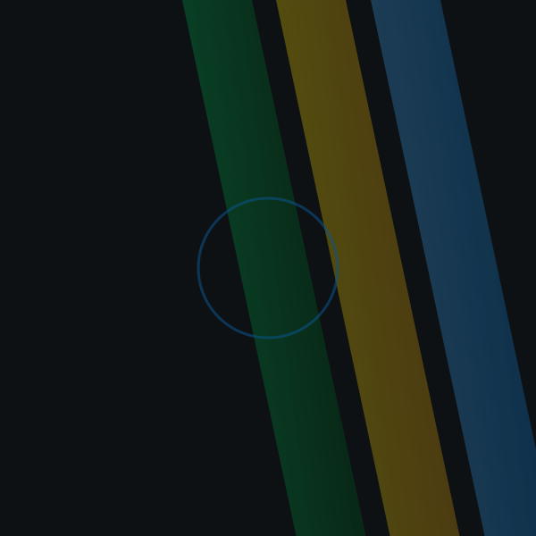
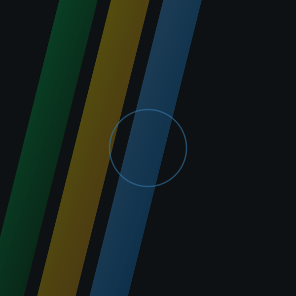
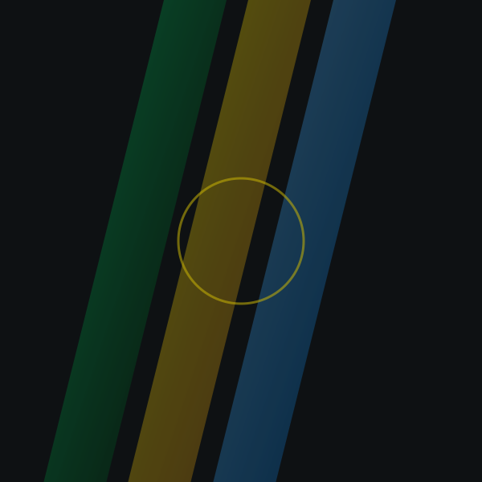
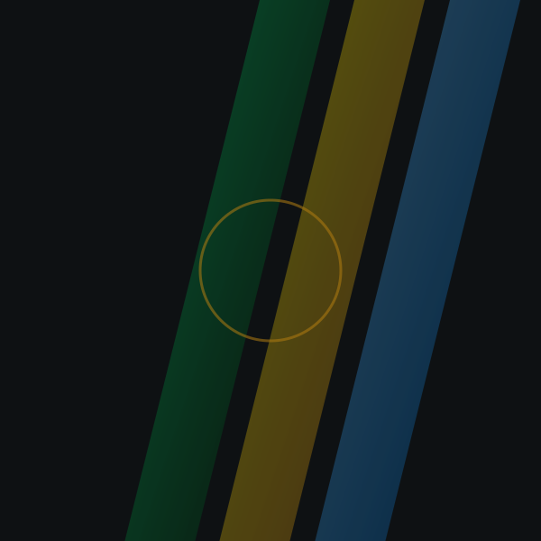

01
Rodada digital
A coreografia obrigatória é divulgada 15 dias antes da etapa. A execução acontece na plataforma oficial, em estação padronizada montada pela produção — duas tentativas, vale a melhor.
Modalidade individual
A única disputa da Phygital Brasil sem elenco: uma atleta, duas avaliações. A plataforma mede a precisão de cada movimento; o júri avalia sincronia e execução em pista. A nota final é a soma das duas metades.
Como funciona
No Phygital Dance a coreografia é disputada duas vezes. Na rodada digital, a atleta executa a coreografia obrigatória da temporada na plataforma oficial, e o sistema compara cada movimento com a marcação de referência quadro a quadro: quanto menor o desvio, maior a pontuação de precisão.
Na rodada de pista, presencial, a mesma atleta apresenta a coreografia diante de uma banca de três jurados credenciados pelo Comitê Técnico. Ali o que pesa é a sincronia com a batida e a execução — postura, amplitude, transições e domínio de palco.
As duas notas se somam em uma escala de 100 pontos. Nenhuma das metades vale sozinha: uma execução digital impecável sem presença de palco não leva ao pódio, e o contrário também não.
| Critério | Peso | Como é medido |
|---|---|---|
| Precisão de movimento | 40 pts | Captura da plataforma, comparada à marcação de referência da coreografia |
| Sincronia | 30 pts | Aderência à batida — média das três notas do júri, descartado o desvio maior |
| Execução em pista | 30 pts | Postura, amplitude, transições e domínio de palco na apresentação presencial |
Empate na soma dos 100 pontos é desfeito pela maior nota de precisão de movimento e, persistindo, por uma repetição de 30 segundos do trecho sorteado pela banca.

Figurino livre, sem elementos que atrapalhem a captura de movimento. Calçado fechado obrigatório. A produção fornece o tablet de aquecimento e a marcação de pista; a música da apresentação sai do repertório oficial divulgado com o edital.
A coreografia obrigatória é divulgada 15 dias antes da etapa. A execução acontece na plataforma oficial, em estação padronizada montada pela produção — duas tentativas, vale a melhor.
Apresentação presencial de 90 segundos, com música sorteada entre as três faixas do repertório oficial. Ordem de entrada definida por sorteio aberto, transmitido ao vivo.
As oito melhores somas avançam. Na final as notas voltam a zero e a disputa é um freestyle de 60 segundos, avaliado pelos mesmos três critérios.
Regras de elenco
O Phygital Dance não tem time. Quem se inscreve é a atleta, por si — e pode indicar uma única pessoa de staff, o que é opcional. Não existe reserva: se a atleta não se apresenta, a vaga não é transferida.
1
Mínimo 1, máximo 1. A inscrição é nominal e intransferível.
0
Modalidade individual não admite reserva em nenhuma etapa.
1
Opcional: coreógrafo, preparador ou responsável legal, com credencial de arena.
| Campo | Obrigatório | Observação |
|---|---|---|
| Nome completo | Sim | Exatamente como consta no documento oficial apresentado no credenciamento |
| Apelido | Sim | Nome artístico que aparece no placar, na pista e na transmissão |
| Sim | Recebe o protocolo e todas as mudanças de lista | |
| Telefone | Sim | Com DDD, preferencialmente com WhatsApp — canal da produção no dia da etapa |
| Data de nascimento | Sim | Menores de 18 anos exigem autorização assinada pelo responsável legal |
| Número de camisa | Sim | De 1 a 99. Identifica a atleta na marcação de pista e no placar |
| Foto | Sim | Proporção 3:4, mínimo 600×800 px, JPG ou PNG de até 5 MB |
| Opcional | Usado na divulgação da etapa e nas artes de resultado |
| Campo | Obrigatório | Observação |
|---|---|---|
| Nome completo | Sim | Só quando o staff for indicado — o bloco inteiro é opcional |
| Sim | Recebe cópia das comunicações da etapa | |
| Telefone | Sim | Com DDD |
| Data de nascimento | Sim | Maior de 18 anos para acessar a área de pista |
| Foto | Sim | Mesmo padrão da foto da atleta — vira a credencial de arena |
| Opcional | Usado apenas na divulgação |
Calendário
Etapas com inscrição aberta neste momento. A inscrição é feita pelo Painel do Competidor.
Ranking nacional
Somatório de todas as edições apuradas. Por ser modalidade individual, a coluna principal é a atleta — não o time.
V = apresentações vencidas em confronto direto · D = derrotas · Camp. = edições disputadas · GOTF = já representou o Brasil na seletiva do Games of the Future.
Histórico
Campeonatos de Dance já encerrados e apurados pela organização.
Galeria
Registros da pista, da estação de captura e da final em Recife.




Fique por dentro
Enviamos um e-mail no dia em que o edital da próxima etapa de Phygital Dance é publicado, com coreografia obrigatória, repertório e prazo de inscrição.